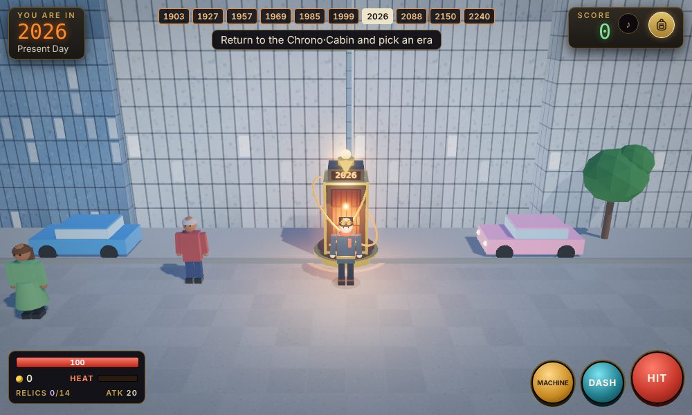
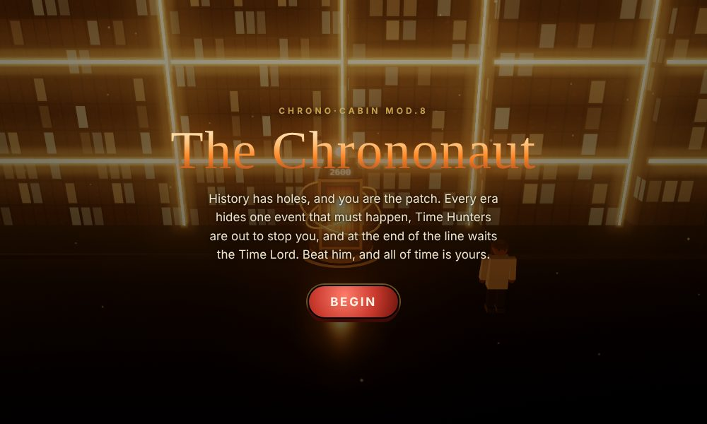
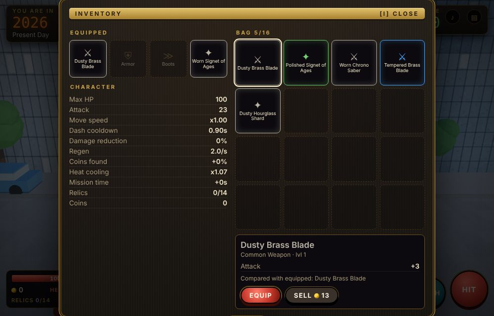

History has holes, and you are the patch. Beat the Time Hunters, and at the end of the line take the Time Lord's throne.
PLAY NOWFind the missing piece, bring it to the landmark and pull off history yourself. Fail, and an era vanishes from the timeline.
Get a lens to the Padua observatory, a golden spike to the railroad, a fuse to Live Aid. Each mission ends in its own mini-game, against a clock that only runs while you are there.
Miss an event in the past and a different era is erased. Travel to the future, collect three chronon cells and repair the line before time runs out.
They arrive through rifts when the timeline notices you. Stay quiet and they mostly leave you alone; erase citizens and the heat rises.
Every era is generated as you walk. Head left or right as far as you like and find relics, coins and gear far from the time machine.
Weapons, armor, boots and trinkets from Common to Legendary. Equip them in your bag, compare stats and watch them appear on your character.
Seal the whole line and one thing remains: the final boss. Defeat him and you become the Time Lord, free to roam every year.
Sepia streets, neon future cities and everything between. More open as the line grows.



On a phone, tap the ground to walk and use the on-screen buttons.